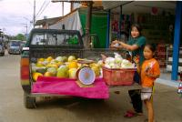
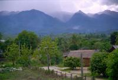

|
Samedi 19 mai
C'est marrant comme d'un pays à l'autre une même langue peut différer. L'anglais
par exemple. Aux Usa et en Angleterre, c'est très très différent; langage en
évolution vers une simplification forte pour les premiers, langue délicate très
articulée pour les seconds. Hé bien,cette langue est encore différente en Inde,en
Thaïlande et sans doute ailleurs. En plus, quand elle est parlée par des français,des
indiens ou des thaïs, ça accentue encore les différences. Les uns et les autres
doivent s'adapter l'accent et au parler petit nègre,comme c'est souvent le cas,
de l'autre. Une langue aussi universelle que l'anglais entraîne des quiproquos
surtout entre les non anglophones.
Nous voici donc à Paï, un petit village à 4 heures en bus de Chiang Maï. Après
le bruit et la circulation de cette dernière, cela fait un bien fou de se retrouver
ici. Installés dans une petite guesthouse toute en bois (une guesthouse, c'est
un petit hôtel pas cher où on peut -souvent- manger...mais quand on est de vrais
voyageurs tourdumondistes comme nous, on appele cela une guesthouse). On a vite
fait de parcourir les deux grandes rues qui constituent les artères du village.
Autour, des montagnes -en fait de grosses colines- toutes vertes. La route menant
à Paï est magnifique, par monts et par vaux, d'une montagne verte à la suivante,
à 10 km/heure. Partout, des arbres ou des bouquets de bambous s'élançant vers
le ciel telles des explosions d'énergie, la nature nous tend les bras, on rêve
de s'y plonger, on se retient finalement, le ventilo, ça a du bon par 40 degrés.
Tout est propret et soigné, chaque maison est fleurie, les haies taillées. C'est
agréable comme tout.
Dimanche 20 mai
Le temps de se lever, de déjeuner et de bouquiner un peu les guides (le Vietnam
ça n'a pas l'air fastoche) et la matinée est déjà passée. On se balade un peu
dans Paï. Bref, on attend 15h00 et la fin de la période très chaude de la journée
pour louer des bicyclettes (appelées vélos ici, enfin pas vraiment, plutôt baillecicoles).
L'orage gronde. Peu importe. On n'est pas des poules mouillées. Enfin pas encore...
Et on a bien fait. La force de nos mollets nous mènent au milieu de colines
verdoyantes et de plaines verdoyantes aussi (sauf lorsqu'il s'agit de champs
cultivés, là avec toute l'eau qui tombe -il pleut tous les soirs- c'est plutôt
brun-boueux). Ca monte dur parfois, ça fait le cuissot ferme. Sur la route,
des paysans (ou sont-ce des agriculteurs) qui s'activent sur leurs terres, des
buffles qui broutent ou se baignent et de bien jolis paysages très verts. Tout
se passe très bien jusqu'à ce que l'orage éclate. Et ici lorsqu'il pleut, ce
n'est pas pour rire! On s'abrite un bon moment avant de repartir vers un village
karen (il s'agit d'une ethnie montagnarde du nord de la Thaïlande) tout en bois
où l'on est accueillis par des gamins pourtant fort occupés a se marer en voyant
le cours d'eau en crue et les gens occupés à dévier les flots trop importants
ou encore à sortir un camion embourbé.
Et hop, c'est reparti, l'orage est à son maximum. On attend, on s'abrite avec
un gars qui était en train de bricoler dans la rivière. Mais cette fois-ci,
ça se calme mais ça ne s'arrête pas. Alors tant pis, on repart sous la pluie
et on arrive complètement trempés. Malgré ça, on n'a pas froid, il fait tellement
chaud. Chouette journée.
Suite du voyage : Retour à Chiang Maï
|

Thailande
Pai
|

Thailande
Pai
|
|
|